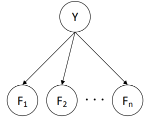
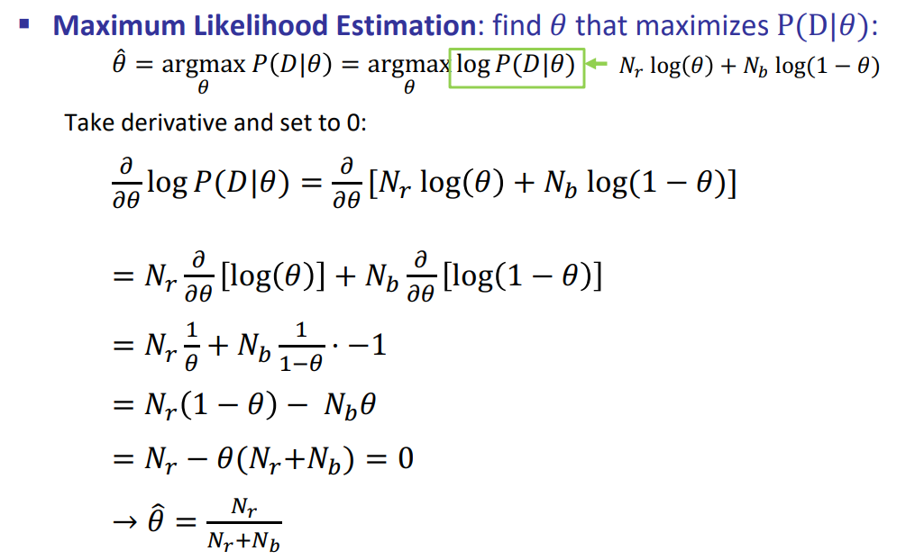
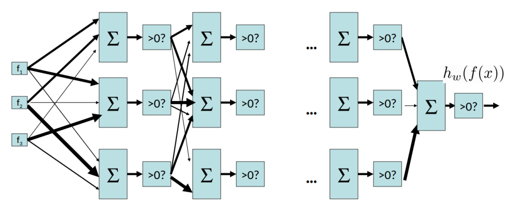

Types of Learning Problems
- Supervised learning: correct answers for each training instance
- Reinforcement learning: reward sequence, no correct answers
- Unsupervised learning: “just make sense of the data”
Classification
A classification problem contains:
- Dataset: pairs of data point and label $(x,y)$
- Goal: Given a new data point $x$, predict its label $y$
ML algorithms learn patterns between features and labels from data.
Model-Based Classification
- Build a model (e.g. Bayes’ net) where features and labels are all random variables.
- Instantiate any observed features
- Query for the distribution of the label conditioned on the features
Naïve Bayes Model

- $Y$: Label
- $P(Y)$: Prior probabilities
- $F_1, F_2, \dots, F_n$: Features
- $P(F_k|Y)$: Probability of feature $F_k$ given label $Y$
To perform training:
- Estimate $P(Y)$ and $P(F_k|Y)$ from the training data
To perform classification:
- Instantiate all features.
- Query for $P(Y|F_1, F_2, \dots, F_n)$, given all features. Using inference to compute this.
- Select the label with the highest probability as the prediction.
General Naïve Bayes
Left-hand side contains $|Y|\times |F|^n$ states, while right-hand side contains $|Y| + |Y|\times |F|\times n$ states. The right-hand side is more efficient.
parameter estimation
Given a set of $N$ sample points $x_1, x_2, \dots, x_N$ and you believe the data was drawn from a distribution $P(x|\theta)$, how do you estimate $\theta$?
A common approach is to use maximum likelihood estimation (MLE) with following assumptions:
- Each sample point is conditionally independent with each other given $\theta$.
- Each sample point is drawn from the same distribution.
- All possible values of $\theta$ are equally likely before observing the data.
The first two assumptions above are often referred to as independent, identically distributed (i.i.d.).
Given these assumptions, the likelihood of observing the data is:
The MLE estimate of $\theta$ is the value that maximizes the likelihood function:
Take its logarithm (for simplification) and then differentiate it to find the maximum.
Example: MLE for Naïve Bayes

Laplace Smoothing
Zero probabilities can cause problems in Naïve Bayes. Suppose we have a feature $F_k$ that never appears with label $Y$. Then $P(F_k|Y) = 0$ and $P(Y|F_1, F_2, \dots, F_n) = 0$, which leads to disaster.
To avoid zero probabilities, we can use Laplace smoothing with a small constant $k$:
MLE is a special case of Laplace smoothing with $k=0$. And When $k=\infty$, it is equivalent to uniform distribution.
Perceptron Algorithm
Linear Classifier
Basic idea for linear classifier is to do classification using a linear combination of features. So linear classifier contains:
- Inputs are feature values
- Each feature has a weight
- Activation is the sum of weighted features
That is:
Then we determine the label based on the sign of the activation:
Consider the geometric meaning of activation, label is determined by the angle between $\mathbf{w}$ and $\mathbf{f}(\mathbf{x})$. If the angle is acute, then the activation is positive, otherwise negative.
So each linear classifier corresponds to a half-space in the feature space, which splitted by a hyperplane called decision boundary.
Perceptron Algorithm
The perceptron algorithm works as follows:
- Initialize $\mathbf{w}$ to zero
- For each training example, with features $\mathbf{f}(\mathbf{x})$ and label $y^*\in \{-1, +1\}$:
- Let $y=\text{sign}(\mathbf{w}\cdot \mathbf{f}(\mathbf{x}))$
- If $y\neq y^$, update $\mathbf{w}$ by $\mathbf{w}\leftarrow \mathbf{w}+y^\mathbf{f}(\mathbf{x})$
- Repeat until no mistakes are made on the training set
How this update rule works? Consider the case where $y=-1$ and $y^*=+1$. Then the update rule updates $\mathbf{w}$ by $\mathbf{w}\leftarrow \mathbf{w}+\mathbf{f}(\mathbf{x})$. So we have
The update leads to an increase of the activation of $\mathbf{x}$, which is exactly what we want.
Bias Term
In the above discussion, the diciion boundary always goes through the origin. To allow the decision boundary to be more flexible, we can add a bias term $w_0$ to the activation:
This can be done naturally by adding a constant feature $f_0(\mathbf{x})=1$ to the feature vector.
Multiclass Perceptron
For each classes we have a weight vector $\mathbf{w}_1, \mathbf{w}_2, \dots, \mathbf{w}_k$. And we can get a weight matrix $\mathbf{W}$:
The activation is:
And the prediction will be:
The update rule is similar to the binary case. When the predicted label different from the ground truth, we need to add(rewarding) the feature vector to the correct weight vector and subtract(punishing) it from the wrong weight vector.
Perceptron with Probability
If the data is not separable, binary perceptron cannot work well. Instead of finding a deterministic decision, find a probabilistic decision.
With perceptron scoring $z=w\cdot f(x)$, if it is
- positive, then we want probability of $+$ going to 1
- negative, then we want probability of $+$ going to 0
We can use sigmoid function to do it:
- $P(y=+1|x;w)=\frac{1}{1+e^{-w\cdot f(x)}}$
- $P(y=-1|x;w)=1 - \frac{1}{1+e^{-w\cdot f(x)}}$
This is called logistic regression. It is important to note that though logistic regression is named as regression, this is a misnomer. Logistic regression is used to solve classification problems, not regression problems.
A useful property to note is that the deravative of logistic function is $\phi’(z)=\phi(z)(1-\phi(z))$.
How do we train the logistic regression model? With L2 Loss $Loss(\mathbf{w})=\frac{1}{2}(\mathbf{y}-h_{\mathbf{w}}(\mathbf{x}))^2$, the gradient of the loss function with respect to the weight of coordinate i is given by:
Multi-Class Logistic Regression
In linear perceptron we use $\max$ to do multi-class perceptron. In probability perceptron we use $\text{softmax}$ to do multi-class perceptron
So we have
The log likelihood is
To get an optimal estimate of $w$ we use hill climbing algorithm.
Binary classification is a special case of multi-class problem:
In practice, we use stochastic gradient ascent to optimize the log likelihood. The update rule is:
Neural Networks
Multi-layer Perceptron
A multi-layer perceptron (MLP) is a feedforward artificial neural network that generates a set of outputs from a set of inputs. An MLP consists of multiple layers of nodes in a directed graph, with each layer fully connected to the next one. Except for the input nodes, each node is a neuron that uses a nonlinear activation function.

A multi-layer perceptron is a universal function approximator. It can approximate any continuous function to any desired accuracy. It can be formally stated:
Theorem. (Universal Function Approximators) A two-layer neural network with a sufficient number of neurons can approximate any continuous function to any desired accuracy.
Activation Functions
- Sigmoid: $\sigma(z)=\frac{1}{1+e^{-z}}$
- Rectified Linear Unit (ReLU): $f(z)=\max(0,z)$
Backpropagation
Backpropagation is a method used in artificial neural networks to calculate the gradient of the loss function with respect to the weights. It is a generalization of the delta rule for perceptrons to multilayer feedforward neural networks.
If you like this blog or find it useful for you, you are welcome to comment on it. You are also welcome to share this blog, so that more people can participate in it. If the images used in the blog infringe your copyright, please contact the author to delete them. Thank you !